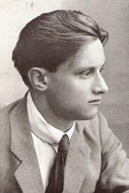
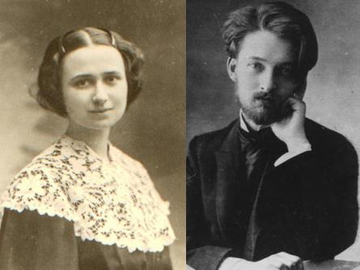
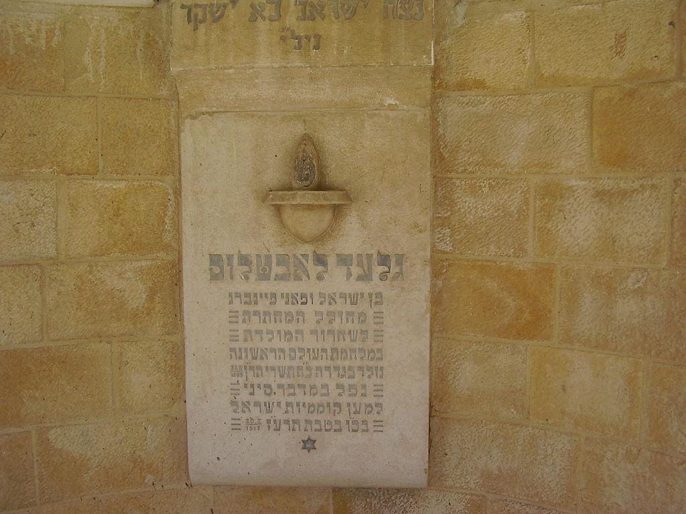
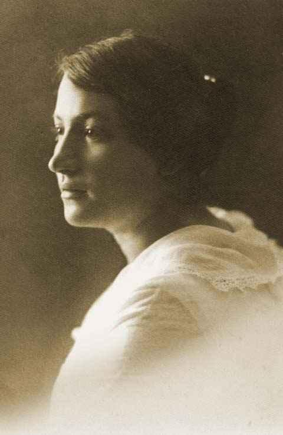
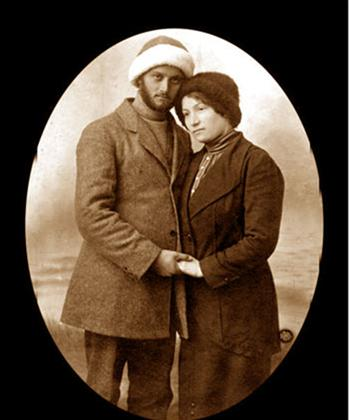
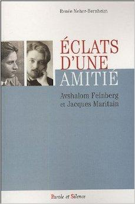
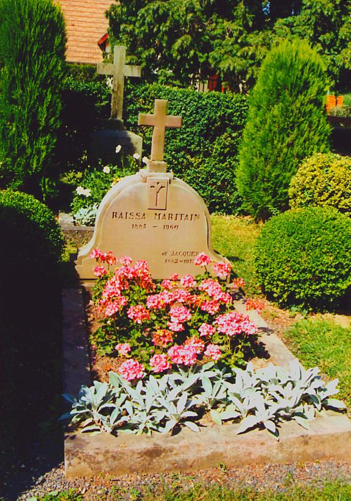

Avshalom Feinberg et Jacques Maritain
Renée Neher-Berheim


Notes
Avshalom Feinberg (אבשלוםפיינברג), né en 1889, compte parmi les fondateurs du réseau d'espionnage Nili, dont l'activité a lieu durant la Première Guerre mondiale en Palestine. Il est assassiné en 1917 par des bédouins du désert du Sinaï. Son lieu d'inhumation n'est découvert qu'après la Guerre des Six Jours.
Avshalom Feinberg naît à Guedera. Issu d'une famille de Bilouïm, il est le fils d'Israël et de Fani (née Belkind). Il étudie dans une école musulmane de Jaffa, où il apprend l'arabe et le Coran. Avec ses parents, il passe d'une implantation à l'autre. À l'âge de 15 ans, il obtient, de l'Alliance israélite universelle, une bourse pour intégrer un lycée parisien.
Grâce à sa tante Alexandra intégrée à la vie parisienne, Feinberg connaît une jeune fille juive, épouse du philosophe français Jacques Maritain, qui devient son ami.
En 1906, âgé de 17 ans, une fois ses études en botanique et en littérature terminées, Avshalom Feinberg retourne en Palestine et de là commence pour lui un long périple; il devient tout d'abord comptable au Caire, puis retourne en Palestine, et de nouveau part pour la Suisse et la France.
C'est à cette époque qu'il forge ses opinions politiques, basées sur l'expulsion de l'Empire ottoman des terres d'Israël et sur le soutien du Yishouv à l'invasion britannique.
En janvier 1909, Feinberg écrit de Paris à son oncle Mendel Henkin: « Les Turcs forment un peuple corrompu… Si dans les dizaines d'années à venir nous ne nous installons pas (aménagement des terrains, construction de maisons, etc.) sur la terre de Palestine, nous serions perdus pour des siècles encore… Nous sommes soit face à notre fin, soit à notre rédemption ».
En 1911, il rencontre l'agronome Aharon Aharonson qui lui propose un travail au centre agricole d'expérimentation d’Atlit. Feinberg est responsable de l'organisation des expériences, de la surveillance des vergers pour la région de la Samarie et de répertorier les plantes d'Israël. De son rapprochement avec la famille Aharonson, Avshalom Feinberg épouse Rivka, la sœur d’Aharon. En 1915, cette dernière part accompagner Aharon au Caire, puis le suivra aux États-Unis où elle restera pour le restant de ses jours.
Avshalom Feinberg dans l'une de ses très émouvantes lettres se fait le témoin bouleversé du génocide des Chrétiens arméniens par les Musulmans turcs.
Il note avec effroi la collaboration allemande à ce génocide.
Son témoignage sera à la base des travaux historiques qui font du génocide arménien par les Turcs la matrice de la Shoah.
Feinberg dirige l'organisation des Guidonim, premier regroupement de sabras engagés dans la lutte contre le pouvoir ottoman. En collaboration avec Aharon Aharonson en 1915, il met en place le réseau d'espionnage Nili, dont la mission est de transmettre certains renseignements aux forces anglaises. Nili (נילי) sont les initiales de « Netzah Israël Lo Yeshaker » (« Le Protecteur d'Israël n'est pas trompeur ») ou en hébreu (« L'Eternel d'Israël ne mentira pas »), verset tiré du Livre de Samuel I (15/29).
C'est à cette période qu'il se rapproche de l'autre sœur d’Aharon, Sara Aharonson, qui vit alors séparé de son époux. Après plusieurs tentatives échouées, Feinberg réussit à atteindre l'armée britannique installée en Égypte, où il convient avec les Anglais du processus pratique de transmission des informations.
À son retour en Palestine, les membres du Nili correspondent déjà par la mer avec les Anglais, depuis la plage d’Atlit.
Avec le départ d’Aharon Aharonson pour Berlin, via Constantinople, Feinberg et Aharonson se perdent de vue. Le maintien du contact entre le Nili et les forces anglaises est donc désormais sous la responsabilité de Feinberg.
En janvier 1917, Avshalom Feinberg accompagné de Yossef Lishansky, tous deux déguisés en bédouins, partent traverser le Sinaï, afin de reprendre contact avec les Anglais, perdu depuis. Le 20 janvier, ils sont attaqués par des bédouins près de Rafah. Avshalom Feinberg est tué sous les coups de feu. Lishansky blessé, réussit à reprendre contact avec Aharon Ahronson au Caire.
La disparition de Feinberg engendrera indirectement la découverte du réseau par les Turcs en octobre 1917. Les conditions de la mort de Feinberg restent peu connues, du fait du silence d’Aharon Aharonson et de celui de Lishansky, décidés à préserver le moral des membres du réseau.
Naaman Belkind part alors sur les traces de Feinberg, mais en chemin il est arrêté par la police turque.
Ce n'est qu'en 1967, après la Guerre des Six Jours et la prise de la péninsule du Sinaï, que la tombe de Feinberg est retrouvée, à l'ombre d'un dattier. La légende rapporte que ce dernier a poussé des dattes que Feinberg avait pour habitude de déposer dans ses poches. Il est cependant à noter dans la culture arabe bédouine qu'il est de coutume de faire pousser un dattier sur la tombe d'un individu mort de mort violente... Il est alors transféré au cimetière du Mont Herzl.
La majorité de ses correspondances a été rassemblée dans un ouvrage consacré à sa vie (Avshalom). L'extrait d'une de ces lettres, destinée à Rivka, fut mis en chanson et fait partie aujourd'hui du folklore musical d'Israël.
- Naissance: 23 octobre 1889, Guedera, Israël - Décès: 20 janvier 1917, Rafah, Égypte

Mémorial Avshalom Feinberg

Sarah Aharonson
Sarah Aharonson ( שרהאהרונסון) compte parmi les fondatrices du réseau Nili, dont elle fut une fervente activiste. Sarah Aharonson naît à Zihron Yaakov en 1890. Après son mariage avec un Juif d'origine turque, elle part s'installer à Constantinople. Avec la déclaration de la Première Guerre mondiale, Sarah part pour la Terre d'Israël. En chemin, elle est témoin des tortures de l'armée turque à l'encontre du peuple arménien. Lui parviennent simultanément les échos des répressions turques contre les Juifs du Yishouv. En décembre 1916, Sarah Aharonson arrive enfin à Zihron Yaakov où elle intègre directement le réseau Nili. Avec le départ de son frère Aharon pour l'étranger, Sarah gère, avec l'aide de Avshalom Feinberg, les informations obtenues par le Nili et elle veille au bon fonctionnement de la transmission de messages, entre la ferme expérimentale de Atlit et le navire de liaison anglais posté en face. À la suite de l'arrestation de Naaman Belkind et la découverte d'un message secret intercepté par les Turcs, Sarah Aharonson sent l'étau des services policiers turcs se refermer. Elle transmet encore quelques messages aux forces britanniques en Égypte, et dissimule les travaux scientifiques de son frère Aharon.
À l'issue de la fête de Soukkot, en 1917, l'armée ottomane encercle le village de Zihron Yaakov et entame une série d'arrestations suivies d'interrogatoires brutaux. Durant quatre jours, Sarah est torturée jusque devant son père âgé et son frère Tzvi, et ce dans le but d'arracher à ces derniers quelque détail sur les activités du Nili. Sarah Aharonson ne divulguera aucune information.
Lorsque lui parvient la décision de son transfert dans les geôles syriennes, Sara se suicide à l'aide d'un révolver dissimulé dans la maison familiale. Elle ne meurt pourtant pas sur le coup, et durant encore trois journées elle survit entre les mains des policiers turcs. Sara Aharonson meurt le 9 octobre 1917. Elle est enterrée au cimetière de Zihron Yaakov.
- Naissance: 5 janvier 1890, Zikhron Yaakov, Israël - Décès: 9 octobre 1917, Zikhron Yaakov, Israël Sarah Aharonson et Avshalom Feinberg à Damas, 1916, avant que leur réseau d’espionnage ne soit découvert.

Son camarade du Nili et frère d’âme. Sarah Aronson lui donna ses prières et quelques dattes pour le voyage. Ils posent ensemble pour une (dernière) photographie avant qu’il ne parte à cheval. Quelqu’un a dit au sujet de cette photo: « C’est la dernière ».

[…] A l’heure du départ, mon mari offre à Jacques Maritain son dernier livre qui vient de paraître: Dans tes portes Jérusalem. Nous espérons que Jacques Maritain a été, lui aussi, content de cette rencontre. En tous cas, je l’ai appris bien plus tard, il note dans ses Carnets intimes:
« Lundi 31 [juillet]: Visite de M. et Mme Neher. Grandement ému de les voir. Nous nous embrassons quand ils partent. Il est en réalité plus rabbin mystique que professeur. Beaucoup pensé au mystère d’Israël après leur départ et commencé à lire son petit livre sur Jérusalem qu’il m’a donné. »
Après notre retour à Jérusalem parvient la lettre que Jacques Maritain a pris la peine d’écrire après avoir lu de très près le livre qu’André Neher lui a offert:
« Kolbsheim, le 21 août 1972
Mon bien cher ami,
J’aurais voulu vous écrire tout de suite combien j’ai été heureux de votre visite ici avec Madame Neher, j’en ai été empêché parce que j’avais eu l’imprudence de commencer un petit travail qui absorbait tout mon peu de forces et que je renonce maintenant à continuer.
Ce que je veux vous dire aussi, c’est l’émotion bouleversante avec laquelle j’ai lu votre livre Dans tes portes Jérusalem, qui m’apparaît comme un admirable témoignage de la foi juive prise en sa pure intégrité.
A cause de la fatigue et de la peine à trouver mes mots, je suis incapable de vous en parler comme j’aurais souhaité, et de vous dire tout ce qu’il a apporté à cette méditation sur les voies de Dieu qui ne cesse d’occuper mon pauvre esprit. Je vous ai une profonde gratitude des grandes vérités qu’il nous rappelle, comme aussi des questions qu’il nous oblige à nous poser sur la terrible dialectique divine, stupéfiante et éblouissante à la fois, concernant Israël et l’Église du Christ. Le Seigneur lui-même n’a-t-il pas voulu cette sorte de concurrence ardente qui pourtant devant lui est en même temps foncière convergence fraternelle (que cachent aux yeux des hommes les atrocités commises par tant de chrétiens, et qui toutefois, chez ceux qui comprennent un peu, donne lieu à la plus grande amitié) entre les deux peuples de Dieu.
En vous lisant et en vous admirant, il m’était impossible de ne pas garder au cœur le souvenir de saint Paul et de la lutte formidable menée par lui pour que l’Église naissante pût annoncer l’Evangile aux incirconcis, et il me semblait entendre à l’arrière-plan comme un dialogue entre lui et vous. Cette Jérusalem que vous aimez d’un si merveilleux amour est quand même une ville de la terre, n’est-il pas trop clair qu’elle ne pourrait embrasser dans ses murs l’universalité de tous ceux qui sont ici-bas dans la grâce de Dieu? N’est-ce pas par un Corps mystique immensément plus vaste, et qui n’est pas du monde tout en existant dans le monde, que le message de salut dont Israël est chargé peut s’étendre à toutes les nations, comme les psaumes et les prophètes nous le disent? Et n’est-ce pas la foi qui nous sauve, cette foi qui brûle en votre âme et qui est aussi celle des justes du christianisme? La terrible dialectique divine à laquelle je pense, je crois qu’elle n’aura son terme qu’à la fin de l’histoire humaine dans la commune persécution et les communes douleurs où seront réunis Israël et les vrais disciples de Jésus, avant la résurrection des morts.
Car j’exulte comme vous du mystère de bénédiction dont la fondation de l’État d’Israël est le signe, et de toutes mes forces je chéris cet État, mais je crois aussi, hélas, que les Juifs n’ont pas fini de souffrir. (N’est- ce pas ce que suggèrent aussi vos si belles pages « Nous avions cru »? Et n’est-ce pas je ne sais quel obscur ressentiment contre le mystère sacré auquel l’État d’Israël, Erets Israel, se réfère en en ses bases les plus profondes qui explique, derrière les stupides prétextes politiques et autres qu’ils invoquent, l’attitude des amis « antisionistes » et plus ou moins gauchistes qui vous ont quitté?)
Ah, je ne suis pas fier d’être un Gentil! Leur histoire s’est traînée dans la boue. J’ai reçu la grâce d’avoir auprès de moi, toute ma vie, et pour se sacrifier à mon pauvre travail, deux saintes filles d’Israël, Raïssa et sa sœur, dont les ancêtres étaient des hassidim et qui ont aimé Jésus de tout leur cœur; et c’est à elles que je dois tout. Et je sais ma misère à moi, et j’ai honte de leur survivre.
Et je sais bien que, trop souvent, on sent le Gentil sous le chrétien. Vous dites, page 137, que « Rome et La Mecque sont des forteresses en terre de conquête », et que « leur soubassement est païen ». Cela est vrai en un sens, selon que vous pensez à tous les Gentils convertis au christianisme depuis bientôt 2000 ans, et dont le chef est à Rome. Mais cela n’est pas vrai de la personne elle-même de l’Église du Christ, elle n’a pas de soubassement païen car, ainsi que le dit saint Paul, c’est sur le tronc d’Israël qu’elle est greffée.
Laissez-moi, pour terminer, revenir sur la mystérieuse convergence à laquelle j’ai fait allusion plus haut. J’en trouve un exemple bien frappant dans vos remarques si vraies concernant les savants juifs (pages 113-118), et dans celles qui concernent (pages 126-128) la triste condition des « Israélites » adaptés au monde. Tout cela peut s’appliquer, dans le premier cas, à la soi-disant « science » qui fait aujourd’hui dérailler tant d’exégètes chrétiens, dans le second cas, à cette adaptation au présent monde et cet agenouillement devant lui de tant de chrétiens qui voudraient faire du christianisme une espèce de grand Parti plus séduisant que le communisme, et prétendant comme lui mener les hommes au parfait bonheur temporel ici-bas, dans un oubli aussi total que possible des vérités de la foi, dont se moque le monde.
Pardonnez-moi cette lettre que je voulais brève et qui s’est faite bien trop longue.
Priez pour moi, mon bien cher ami. Et laissez-moi, en vous embrassant tous deux, vous redire, à Madame Neher et à vous, l’admiration et la tendresse du vieux.
Jacques »
Cette lettre nous parvient à Jérusalem. C’est le moment où onze sportifs israéliens sont assassinés lors des Jeux Olympiques de Munich. Nous sommes brutalement repris dans l’enchaînement harcelant et presque toujours dramatique des événements en Israël. Mais le souvenir de notre visite à Jacques Maritain reste vivace et lumineux.
Le legs d’une amitié
Soudain, les premiers jours de mai 1973, la radio nous apprend la nouvelle de sa mort. Pour nous qui l’avions vu si présent, si chaleureux, l’été précédent, c’est un coup rude. Nous nous faisons envoyer des journaux de France. Décédé le 28 avril 1973 à Toulouse, il est enterré quelques jours plus tard à Kolbsheim en une tombe jumelée à celle de Raïssa.
C’est le souvenir d’Avshalom Feinberg qui nous a fait nous rencontrer. Maritain est mort plus d’un demi- siècle après lui mais il a bien souvent pensé à lui.
Amitié peu commune dont nous nous sentons soudain comme les héritiers. La lettre de Jacques Maritain à mon mari, nous la gardons en témoignage émouvant de son attachement à Israël. C’est pour nous un peu comme si André Neher avait pris pour Maritain le relais de son attachement à la terre d’Israël, inauguré soixante ans plus tôt grâce à Avshalom Feinberg.
